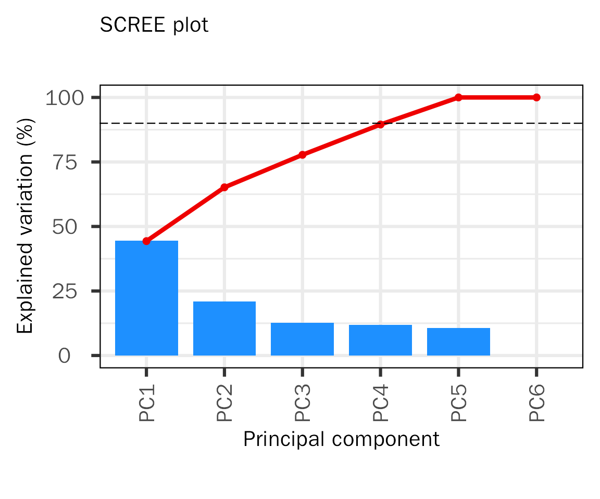
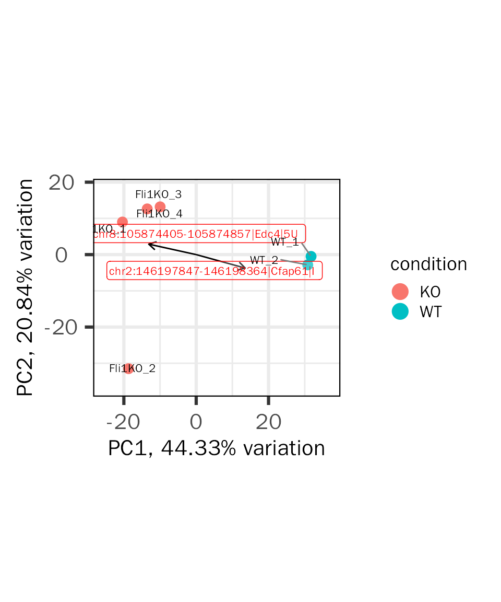
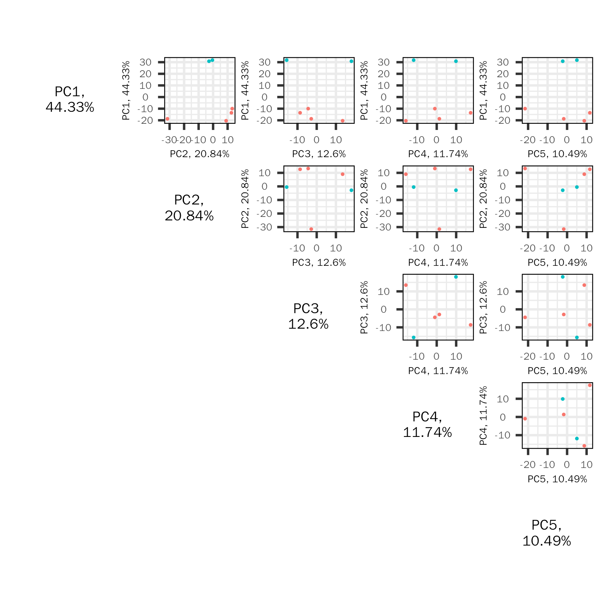
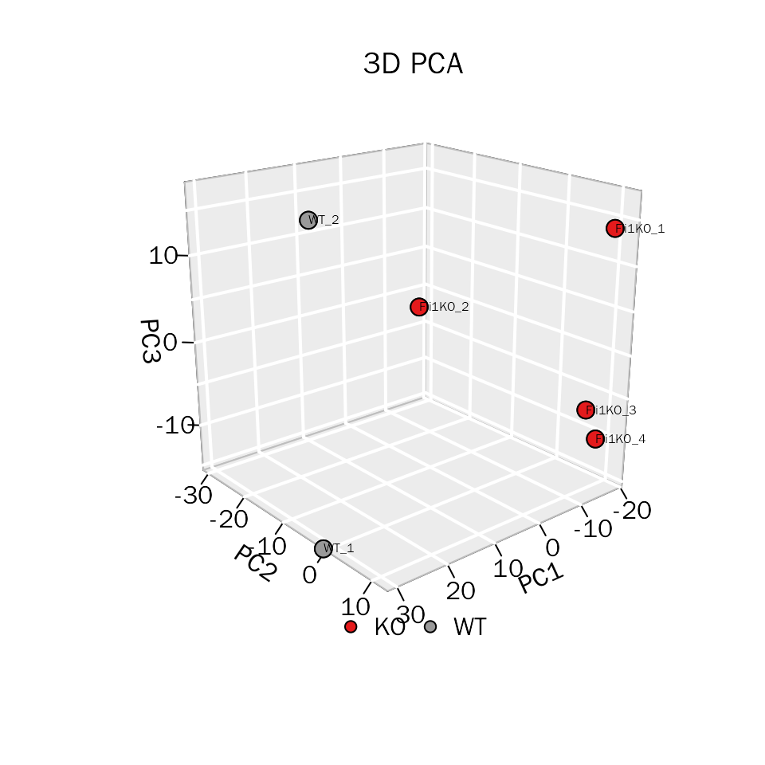

PrincipalComponentAnalysisPeak.RmdHere, we will perfrom principal component analysis (PCA) on peak-related data (eg: ChIP-seq, ATAC-seq, m6a-seq et al.)
The data used here are from In vivo CD8+ T cell CRISPR screening reveals control by Fli1 in infection and cancer:
The raw data:
# read the raw data
atac.counts = utils::read.table(file = "/home/songyabing/R/learn/tmp/DEbPeak/GSE149836_combUnionReadsWithLabels.txt",
sep = "\t", header = T)
head(atac.counts)## chr start end X290_1_S4 X290_2_S5 X360_1_S6 X360_2_S7 R_1_S2 R_2_S3
## 1 chr1 3131803 3131948 2 15 0 3 4 0
## 2 chr1 3210046 3210121 0 1 0 1 0 0
## 3 chr1 3265577 3265648 3 2 0 8 5 2
## 4 chr1 3345206 3345286 3 2 1 0 2 1
## 5 chr1 3505380 3505504 3 4 0 12 4 2
## 6 chr1 3513642 3513745 0 0 2 3 13 2To perform analysis (including Quality Control), we need to preprocess the data (row: feature, column: sample):
# read the processed data, the feature is consist of peak region, gene symbol and annotated binding region.
atac.counts.file = system.file("extdata", "RA_ATAC_count.txt", package = "DEbPeak")
atac.counts = utils::read.table(file = atac.counts.file, sep = "\t", header = T)
head(atac.counts)## Fli1KO_1 Fli1KO_2 Fli1KO_3
## chr1_GL456211_random:112828-112899|LOC100041034|DI 4 6 14
## chr1_GL456211_random:113055-113190|LOC100041034|DI 7 13 10
## chr1_GL456211_random:147874-147989|LOC100041034|DI 15 16 22
## chr1_GL456211_random:167241-167436|LOC100041034|DI 53 40 43
## chr1_GL456211_random:174677-174747|LOC100041034|I 9 6 17
## chr1_GL456211_random:199244-199444|LOC100041034|DI 23 14 26
## Fli1KO_4 WT_1 WT_2
## chr1_GL456211_random:112828-112899|LOC100041034|DI 12 10 3
## chr1_GL456211_random:113055-113190|LOC100041034|DI 11 21 31
## chr1_GL456211_random:147874-147989|LOC100041034|DI 14 23 27
## chr1_GL456211_random:167241-167436|LOC100041034|DI 54 39 46
## chr1_GL456211_random:174677-174747|LOC100041034|I 6 14 10
## chr1_GL456211_random:199244-199444|LOC100041034|DI 11 27 46If you have raw bam files of input/control and treatment samples and sample metadata, DEbPeak provides PeakMatrix to prepare the above count matrix.
And, we also need the sample metadata:
# read the processed data
atac.meta.file = system.file("extdata", "RA_ATAC_meta.txt", package = "DEbPeak")
atac.meta = utils::read.table(file = atac.meta.file, sep = "\t", header = T)
head(atac.meta)## condition
## Fli1KO_1 KO
## Fli1KO_2 KO
## Fli1KO_3 KO
## Fli1KO_4 KO
## WT_1 WT
## WT_2 WTWith above data, we can create DESeqDataSet object:
suppressWarnings(suppressMessages(library(DESeq2)))
# create dds
dds.atac <- DESeq2::DESeqDataSetFromMatrix(
countData = atac.counts, colData = atac.meta,
design = ~condition
)## Warning in DESeqDataSet(se, design = design, ignoreRank): some variables in
## design formula are characters, converting to factorsWe will perform PCA with prcomp:
# conduct PCA
pca.res=PCA(deobj = dds.atac,transform.method = "rlog")
# get basic plots
basic.plots=PCABasic(pca.res,colby="condition",legend.pos = "right")A Scree Plot is a simple line plot that shows the total amount of variance that can be explained by each individual PC (Y-axis shows explained variance, X-axis shows the number of PCs). It can be used to determine the number of PCs to be explored for downstream analysis. Here, we created a cumulative scree plot based on PCAtools, the red dashed line represents 90% explained variance.
basic.plots[["screen"]]
Biplot contains informations from two aspects:
The biplot is created based on PCAtools:
basic.plots[["biplot"]]
The PC pairs plot (based on PCAtools) will show sample similarity across different PC combination:
basic.plots[["pairs"]]
To visualize three PCs simultaneously, DEbPeak provides PCA3D to create 3D PCA plot:
PCA3D(pca = pca.res, color.key = "condition", main = "3D PCA")
## R version 4.0.3 (2020-10-10)
## Platform: x86_64-conda-linux-gnu (64-bit)
## Running under: CentOS Linux 7 (Core)
##
## Matrix products: default
## BLAS/LAPACK: /home/softwares/anaconda3/envs/r4.0/lib/libopenblasp-r0.3.12.so
##
## locale:
## [1] LC_CTYPE=zh_CN.UTF-8 LC_NUMERIC=C
## [3] LC_TIME=zh_CN.UTF-8 LC_COLLATE=zh_CN.UTF-8
## [5] LC_MONETARY=zh_CN.UTF-8 LC_MESSAGES=zh_CN.UTF-8
## [7] LC_PAPER=zh_CN.UTF-8 LC_NAME=C
## [9] LC_ADDRESS=C LC_TELEPHONE=C
## [11] LC_MEASUREMENT=zh_CN.UTF-8 LC_IDENTIFICATION=C
##
## attached base packages:
## [1] stats4 stats graphics grDevices utils datasets methods
## [8] base
##
## other attached packages:
## [1] org.Mm.eg.db_3.12.0 AnnotationDbi_1.52.0
## [3] DEbPeak_0.9.0 DESeq2_1.30.1
## [5] SummarizedExperiment_1.20.0 Biobase_2.50.0
## [7] MatrixGenerics_1.2.1 matrixStats_0.58.0
## [9] GenomicRanges_1.42.0 GenomeInfoDb_1.26.7
## [11] IRanges_2.24.1 S4Vectors_0.28.1
## [13] BiocGenerics_0.42.0
##
## loaded via a namespace (and not attached):
## [1] rsvd_1.0.3
## [2] ggvenn_0.1.9
## [3] apeglm_1.12.0
## [4] Rsamtools_2.6.0
## [5] rsvg_2.1
## [6] foreach_1.5.1
## [7] rprojroot_2.0.2
## [8] crayon_1.4.1
## [9] V8_3.4.2
## [10] MASS_7.3-53.1
## [11] nlme_3.1-152
## [12] backports_1.2.1
## [13] sva_3.38.0
## [14] GOSemSim_2.25.0
## [15] rlang_1.0.3
## [16] XVector_0.30.0
## [17] readxl_1.3.1
## [18] irlba_2.3.5
## [19] limma_3.46.0
## [20] GOstats_2.56.0
## [21] BiocParallel_1.24.1
## [22] rjson_0.2.20
## [23] bit64_4.0.5
## [24] glue_1.6.2
## [25] DiffBind_3.0.15
## [26] mixsqp_0.3-43
## [27] pheatmap_1.0.12
## [28] parallel_4.0.3
## [29] DEFormats_1.18.0
## [30] base64url_1.4
## [31] tcltk_4.0.3
## [32] DOSE_3.23.2
## [33] haven_2.3.1
## [34] tidyselect_1.1.0
## [35] rio_0.5.27
## [36] XML_3.99-0.6
## [37] tidyr_1.1.3
## [38] ggpubr_0.4.0
## [39] GenomicAlignments_1.26.0
## [40] xtable_1.8-4
## [41] magrittr_2.0.1
## [42] evaluate_0.14
## [43] ggplot2_3.3.5
## [44] cli_3.3.0
## [45] zlibbioc_1.36.0
## [46] hwriter_1.3.2
## [47] rstudioapi_0.13
## [48] bslib_0.3.1
## [49] GreyListChIP_1.22.0
## [50] fastmatch_1.1-3
## [51] BiocSingular_1.6.0
## [52] xfun_0.30
## [53] askpass_1.1
## [54] clue_0.3-59
## [55] gson_0.0.9
## [56] cluster_2.1.1
## [57] caTools_1.18.2
## [58] tidygraph_1.2.0
## [59] tibble_3.1.0
## [60] ggrepel_0.9.1
## [61] Biostrings_2.58.0
## [62] png_0.1-7
## [63] withr_2.4.1
## [64] bitops_1.0-6
## [65] ggforce_0.3.3
## [66] RBGL_1.66.0
## [67] plyr_1.8.6
## [68] cellranger_1.1.0
## [69] GSEABase_1.52.1
## [70] pcaPP_2.0-1
## [71] dqrng_0.2.1
## [72] coda_0.19-4
## [73] pillar_1.5.1
## [74] gplots_3.1.1
## [75] GlobalOptions_0.1.2
## [76] cachem_1.0.4
## [77] GenomicFeatures_1.42.2
## [78] fs_1.5.0
## [79] GetoptLong_1.0.5
## [80] clusterProfiler_4.7.1
## [81] DelayedMatrixStats_1.12.3
## [82] vctrs_0.4.1
## [83] ellipsis_0.3.2
## [84] generics_0.1.0
## [85] plot3D_1.4
## [86] tools_4.0.3
## [87] foreign_0.8-81
## [88] NOISeq_2.34.0
## [89] munsell_0.5.0
## [90] tweenr_1.0.2
## [91] fgsea_1.16.0
## [92] DelayedArray_0.16.3
## [93] fastmap_1.1.0
## [94] compiler_4.0.3
## [95] abind_1.4-5
## [96] rtracklayer_1.50.0
## [97] TxDb.Hsapiens.UCSC.hg19.knownGene_3.2.2
## [98] GenomeInfoDbData_1.2.4
## [99] gridExtra_2.3
## [100] edgeR_3.32.1
## [101] lattice_0.20-45
## [102] ggnewscale_0.4.7
## [103] AnnotationForge_1.32.0
## [104] utf8_1.2.1
## [105] dplyr_1.0.5
## [106] BiocFileCache_1.14.0
## [107] jsonlite_1.7.2
## [108] scales_1.1.1
## [109] graph_1.68.0
## [110] carData_3.0-4
## [111] sparseMatrixStats_1.2.1
## [112] genefilter_1.72.1
## [113] car_3.0-11
## [114] doParallel_1.0.16
## [115] latticeExtra_0.6-29
## [116] brew_1.0-6
## [117] checkmate_2.0.0
## [118] rmarkdown_2.14
## [119] openxlsx_4.2.3
## [120] pkgdown_1.6.1
## [121] cowplot_1.1.1
## [122] textshaping_0.1.2
## [123] forcats_0.5.1
## [124] downloader_0.4
## [125] BSgenome_1.58.0
## [126] igraph_1.3.4
## [127] survival_3.2-10
## [128] numDeriv_2016.8-1.1
## [129] yaml_2.2.1
## [130] plotrix_3.8-2
## [131] systemfonts_1.0.1
## [132] ashr_2.2-47
## [133] SQUAREM_2021.1
## [134] htmltools_0.5.2
## [135] memoise_2.0.0
## [136] VariantAnnotation_1.36.0
## [137] locfit_1.5-9.4
## [138] graphlayouts_0.7.1
## [139] batchtools_0.9.15
## [140] PCAtools_2.2.0
## [141] viridisLite_0.4.0
## [142] digest_0.6.27
## [143] rrcov_1.7-0
## [144] assertthat_0.2.1
## [145] rappdirs_0.3.3
## [146] emdbook_1.3.12
## [147] RSQLite_2.2.5
## [148] amap_0.8-18
## [149] yulab.utils_0.0.4
## [150] misc3d_0.9-1
## [151] data.table_1.14.2
## [152] blob_1.2.1
## [153] ragg_0.4.0
## [154] labeling_0.4.2
## [155] splines_4.0.3
## [156] Cairo_1.5-12.2
## [157] ggupset_0.3.0
## [158] RCurl_1.98-1.3
## [159] broom_0.7.5
## [160] hms_1.0.0
## [161] colorspace_2.0-0
## [162] BiocManager_1.30.16
## [163] shape_1.4.6
## [164] sass_0.4.1
## [165] Rcpp_1.0.9
## [166] mvtnorm_1.1-2
## [167] circlize_0.4.15
## [168] enrichplot_1.10.2
## [169] fansi_0.4.2
## [170] truncnorm_1.0-8
## [171] ChIPseeker_1.33.0.900
## [172] R6_2.5.0
## [173] grid_4.0.3
## [174] lifecycle_1.0.0
## [175] ShortRead_1.48.0
## [176] zip_2.1.1
## [177] curl_4.3
## [178] ggsignif_0.6.3
## [179] jquerylib_0.1.3
## [180] robustbase_0.95-0
## [181] DO.db_2.9
## [182] Matrix_1.3-3
## [183] qvalue_2.22.0
## [184] desc_1.3.0
## [185] RColorBrewer_1.1-2
## [186] iterators_1.0.13
## [187] stringr_1.4.0
## [188] DOT_0.1
## [189] ggpie_0.2.1
## [190] beachmat_2.6.4
## [191] polyclip_1.10-0
## [192] biomaRt_2.46.3
## [193] purrr_0.3.4
## [194] shadowtext_0.0.9
## [195] gridGraphics_0.5-1
## [196] mgcv_1.8-34
## [197] ComplexHeatmap_2.13.1
## [198] openssl_1.4.3
## [199] patchwork_1.0.0
## [200] bdsmatrix_1.3-4
## [201] codetools_0.2-18
## [202] invgamma_1.1
## [203] GO.db_3.12.1
## [204] gtools_3.8.2
## [205] prettyunits_1.1.1
## [206] dbplyr_2.1.1
## [207] gtable_0.3.0
## [208] DBI_1.1.1
## [209] highr_0.8
## [210] ggfun_0.0.6
## [211] httr_1.4.2
## [212] KernSmooth_2.23-18
## [213] stringi_1.5.3
## [214] progress_1.2.2
## [215] reshape2_1.4.4
## [216] farver_2.1.0
## [217] annotate_1.68.0
## [218] viridis_0.6.1
## [219] Rgraphviz_2.34.0
## [220] xml2_1.3.2
## [221] bbmle_1.0.24
## [222] systemPipeR_1.24.3
## [223] boot_1.3-28
## [224] geneplotter_1.68.0
## [225] ggplotify_0.1.0
## [226] Category_2.56.0
## [227] DEoptimR_1.0-11
## [228] bit_4.0.4
## [229] scatterpie_0.1.7
## [230] jpeg_0.1-8.1
## [231] ggraph_2.0.5
## [232] pkgconfig_2.0.3
## [233] rstatix_0.7.0
## [234] knitr_1.37